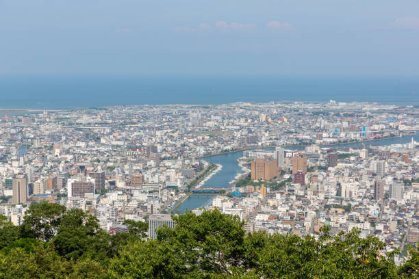

Tokushima este un oraș situat pe insula Shikoku, cunoscut pentru festivalul său anual Awa Odori, un dans tradițional, și pentru frumusețea naturală a regiunii.
Top 10 Atracții din Tokushima:
- Parcul Bizan
- Templul Ryozen-ji
- Festivalele Awa Odori
- Insula Awaji
- Grădina Shikoku
- Shōzan-ji Temple
- Canionul Iya
- Plaja Naruto
- Podul Naruto
- Muzeul de Artă Tokushima